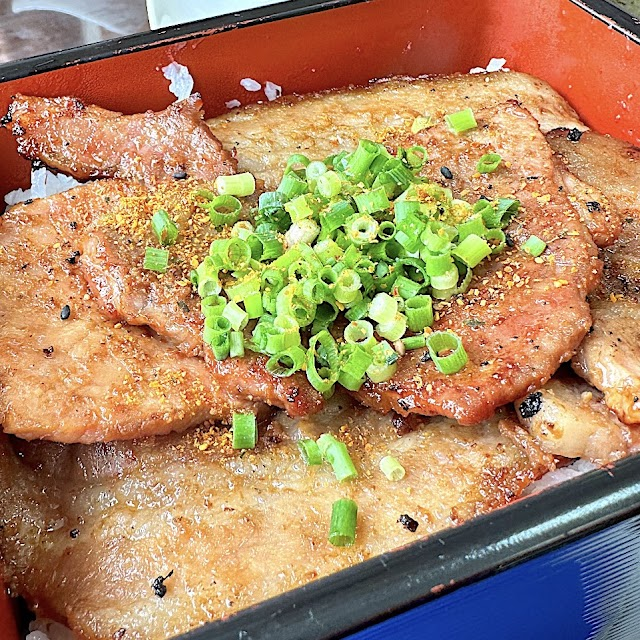
| 営業時間 | 月・火・金・土・日 11:30〜14:00, 18:00〜21:00 |
|---|---|
| 定休日 | 水・木曜 |
| 住所 | 群馬県高崎市中居町２丁目１−１４ |
| 予約 | 可 — ☎ 027-352-5537 ／ 公式サイト |
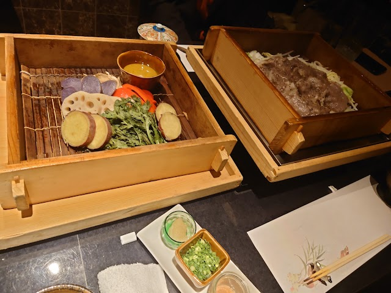
| 営業時間 | 火・水・木・金・土 17:00〜23:00 |
|---|---|
| 定休日 | 月・日曜 |
| 住所 | 群馬県高崎市連雀町３０−１ |
| 予約 | 可 — ☎ 027-393-6687 ／ 公式サイト |
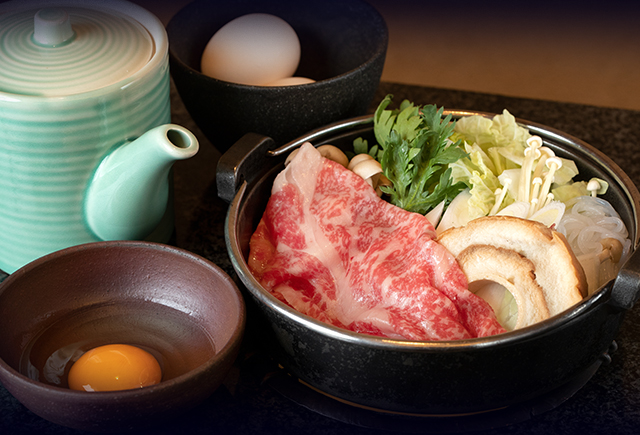
| 営業時間 | 月・火・水・木・金・土 17:00〜21:30 |
|---|---|
| 定休日 | 日曜 |
| 住所 | 群馬県高崎市本町１１０ |
| 予約 | 可 — ☎ 027-323-0093 ／ 公式サイト |
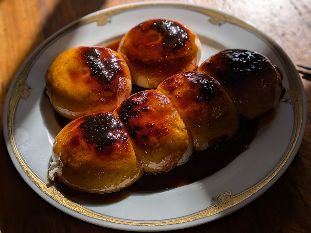
| 営業時間 | 月・火・水・木・金・土・日 10:30〜18:00 |
|---|---|
| 定休日 | なし(要最終確認) |
| 住所 | 群馬県高崎市田町１０８ |
| 予約 | 要確認 — ☎ 027-323-9706 |
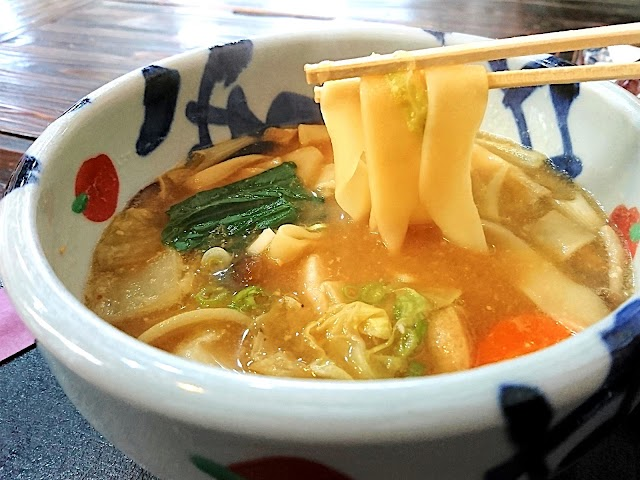
| 営業時間 | 木・金・土 11:30〜14:00 |
|---|---|
| 定休日 | 月・火・水・日曜 |
| 住所 | 群馬県高崎市箕郷町東明屋４０９−４ |
| 予約 | 可 — ☎ 027-371-2650 ／ 公式サイト |
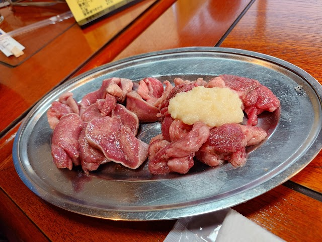
| 営業時間 | 火・水・木・金・土・日 11:30〜14:00, 16:00〜21:00 |
|---|---|
| 定休日 | 月曜 |
| 住所 | 群馬県高崎市下室田町１１１３ |
| 予約 | 可 — ☎ 027-374-0046 |
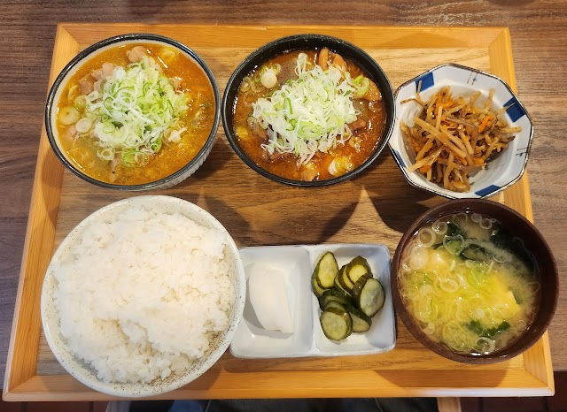
| 営業時間 | 月・火・水・木・金 11:30〜14:00 |
|---|---|
| 定休日 | 土・日曜 |
| 住所 | 群馬県高崎市飯塚町３５５−３ |
| 予約 | 要確認 — ☎ 027-363-1728 ／ 公式サイト |
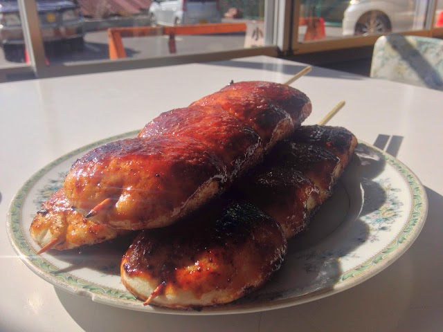
| 営業時間 | 月・火・水・金・土・日 11:00〜16:30 |
|---|---|
| 定休日 | 木曜 |
| 住所 | 群馬県高崎市榛名山町１７７−１ |
| 予約 | 要確認 — ☎ 027-374-9047 |
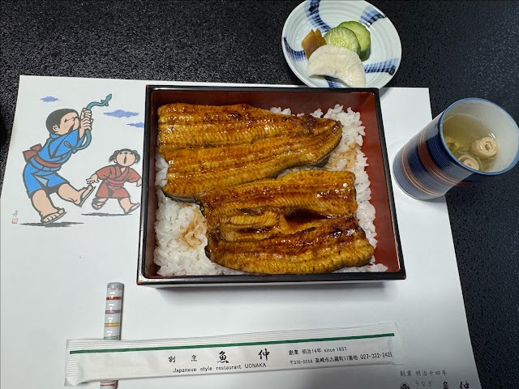
| 営業時間 | 11:30～13:00／17:00～21:00 |
|---|---|
| 定休日 | 年末年始および週一回程度の不定休 |
| 住所 | 群馬県高崎市九蔵町１７ |
| 予約 | 可 — ☎ 027-322-2428 ／ 公式サイト |
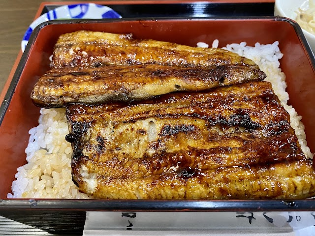
| 営業時間 | 月・火・木・金・土・日 11:00〜14:00, 17:00〜21:00 |
|---|---|
| 定休日 | 水曜 |
| 住所 | 群馬県高崎市嘉多町１ |
| 予約 | 可 — ☎ 027-322-2920 ／ 公式サイト |
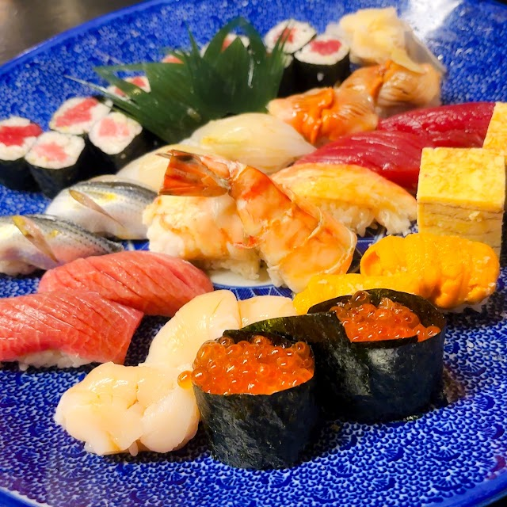
| 営業時間 | 火・水・木・金・土 18:00〜22:00 |
|---|---|
| 定休日 | 月・日曜 |
| 住所 | 群馬県高崎市本町２−１５５ |
| 予約 | 可 — ☎ 027-322-5773 |
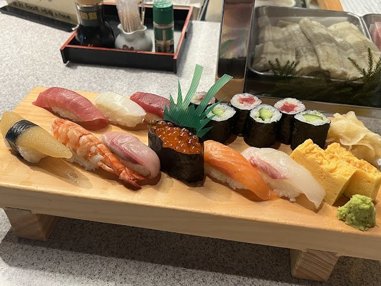
| 営業時間 | 火・水・木・金・土 17:00〜0:00 ／ 日 17:00〜22:00 |
|---|---|
| 定休日 | 月曜 |
| 住所 | 群馬県高崎市本町１０３ |
| 予約 | 可 — ☎ 027-326-3633 ／ 公式サイト |
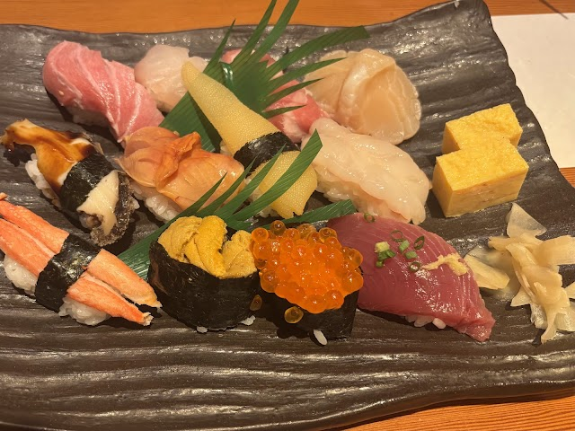
| 営業時間 | 月・火・木・金・土 11:30〜14:00, 17:00〜22:00 ／ 日 11:30〜14:00, 17:00〜21:00 |
|---|---|
| 定休日 | 水曜 |
| 住所 | 群馬県高崎市岩押町１６−１ 寿し処ゆたか |
| 予約 | 可 — ☎ 027-323-2193 ／ 公式サイト |
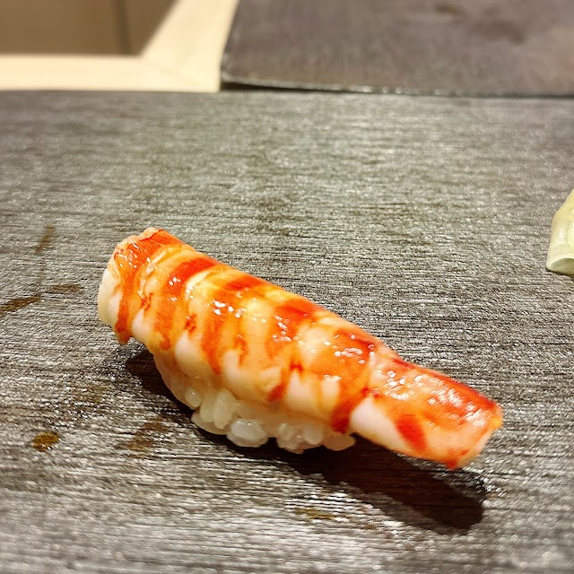
| 営業時間 | 18:00～24:00 |
|---|---|
| 定休日 | 日曜・祝日 |
| 住所 | 群馬県高崎市本町３０−１ |
| 予約 | 可 — ☎ 027-327-0760 |
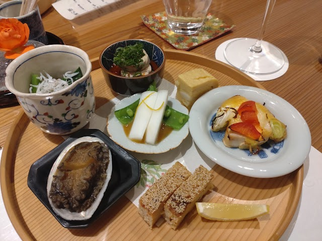
| 営業時間 | 月・火・水・木・金・土・日 11:30〜14:30, 17:30〜23:00 |
|---|---|
| 定休日 | なし(要最終確認) |
| 住所 | 群馬県高崎市三ツ寺町９６６−４ |
| 予約 | 可 — ☎ 027-333-6324 ／ 公式サイト |
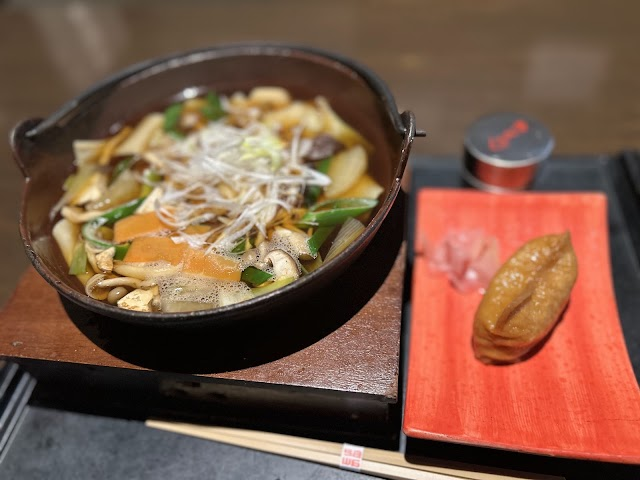
| 営業時間 | 月・火・水・木・金・土 11:30〜14:30, 17:00〜23:00 ／ 日 11:30〜14:30, 17:00〜22:00 |
|---|---|
| 定休日 | なし(要最終確認) |
| 住所 | 群馬県高崎市八島町２６５ B1 |
| 予約 | 可 — ☎ 027-327-1738 ／ 公式サイト |
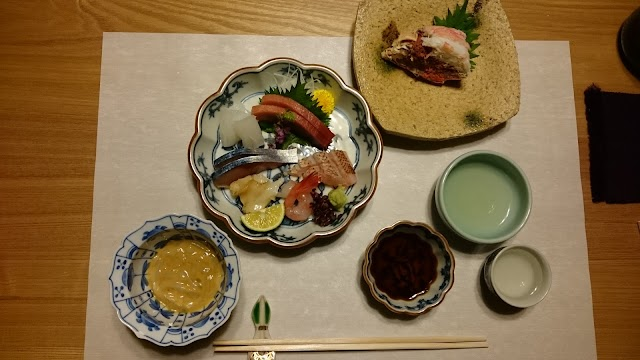
| 営業時間 | 月・火・水・木・金・土 17:30〜22:30 |
|---|---|
| 定休日 | 日曜 |
| 住所 | 群馬県高崎市柳川町２２ |
| 予約 | 可 — ☎ 027-326-9984 ／ 公式サイト |
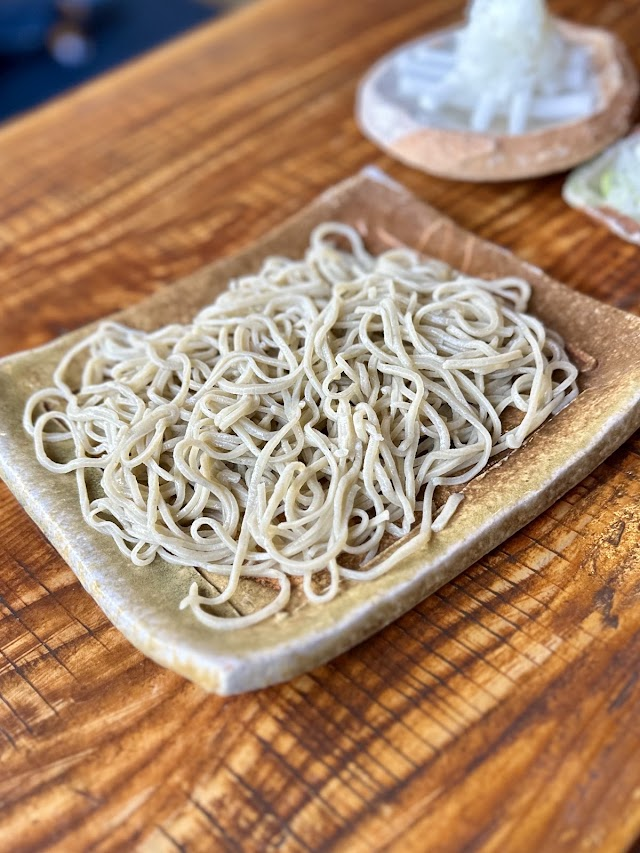
| 営業時間 | 月・水・木・金・土・日 11:30〜15:00 |
|---|---|
| 定休日 | 火曜 |
| 住所 | 群馬県高崎市石原町２４７１ |
| 予約 | 可 — ☎ 027-325-0670 ／ 公式サイト |
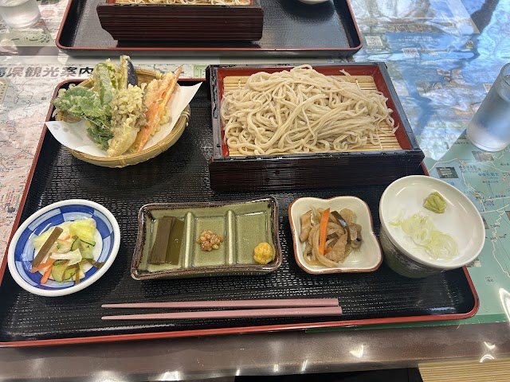
| 営業時間 | 月・火・木・金・土・日 11:00〜15:00 |
|---|---|
| 定休日 | 水曜 |
| 住所 | 群馬県高崎市榛名山町１８３ |
| 予約 | 要確認 — ☎ 027-374-9048 ／ 公式サイト |
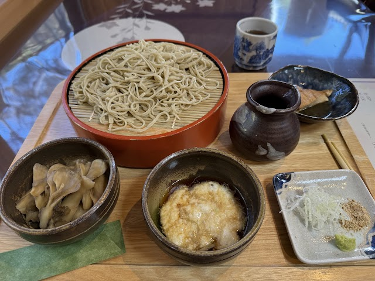
| 営業時間 | 月・水・木・金・土・日 11:30〜14:00 |
|---|---|
| 定休日 | 火曜 |
| 住所 | 群馬県高崎市榛名山町１３７ |
| 予約 | 可 — ☎ 027-374-9115 |
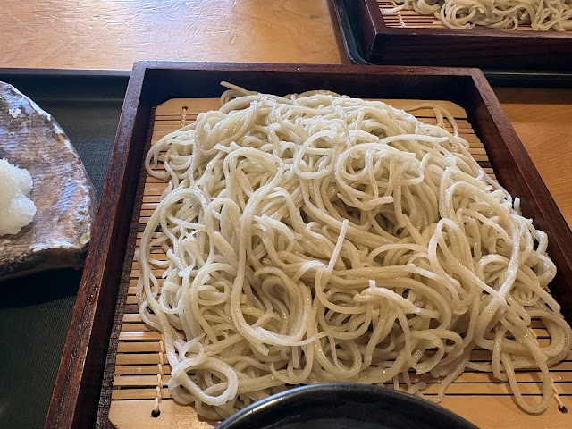
| 営業時間 | 月・火・金・土・日 11:00〜14:15 |
|---|---|
| 定休日 | 水・木曜 |
| 住所 | 群馬県高崎市吉井町長根２０９２−１ |
| 予約 | 可 — ☎ 027-387-8222 ／ 公式サイト |
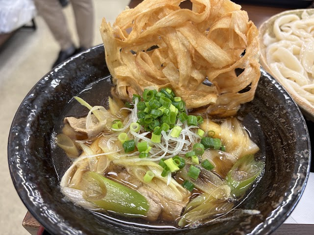
| 営業時間 | 月・火・水・木・金・土・日 11:00〜15:00 |
|---|---|
| 定休日 | なし(要最終確認) |
| 住所 | 群馬県高崎市十文字町１４１９−１ |
| 予約 | 要確認 — ☎ 027-384-2901 ／ 公式サイト |
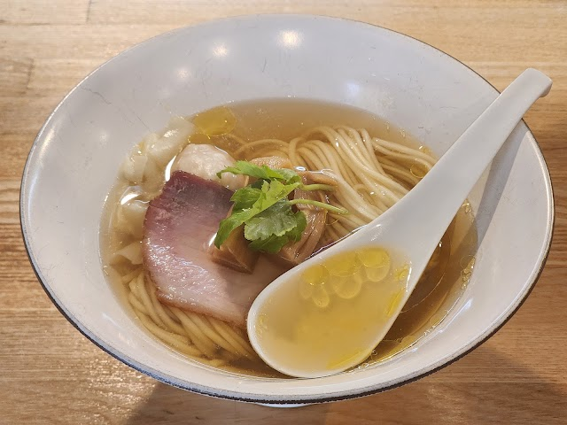
| 営業時間 | 月・火・水・木・金・土 11:00〜15:00 |
|---|---|
| 定休日 | 日曜 |
| 住所 | 群馬県高崎市柳川町９−５ ハヤシハイツ |
| 予約 | 要確認 — 公式サイト |
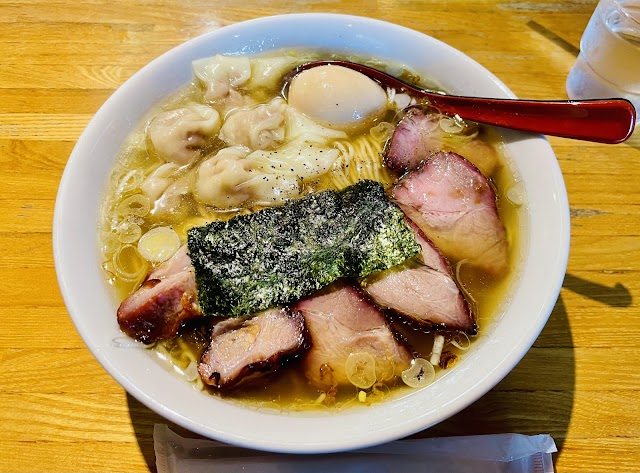
| 営業時間 | 月・火・水・木・金・土 11:00〜14:30 |
|---|---|
| 定休日 | 日曜 |
| 住所 | 群馬県高崎市飯塚町１１９０−４ 高崎市東金井市営住宅 77-A1F |
| 予約 | 要確認 — ☎ 027-363-5161 ／ 公式サイト |
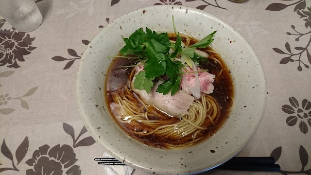
| 営業時間 | 月・火・金・土・日 11:00〜14:00, 18:00〜21:00 |
|---|---|
| 定休日 | 水・木曜 |
| 住所 | 群馬県高崎市問屋町２丁目７ |
| 予約 | 要確認 — 公式サイト |
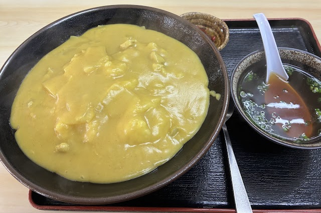
| 営業時間 | 月・火・水・木・金・土・日 11:00〜19:30 |
|---|---|
| 定休日 | なし(要最終確認) |
| 住所 | 群馬県高崎市若松町５−６ |
| 予約 | 要確認 — ☎ 027-322-5810 ／ 公式サイト |
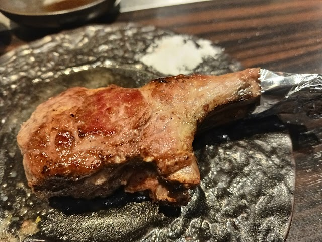
| 営業時間 | 月・火・水・木・金 17:00〜23:00 ／ 土 11:30〜23:00 ／ 日 11:30〜22:00 |
|---|---|
| 定休日 | なし(要最終確認) |
| 住所 | 群馬県高崎市中紺屋町２３−１ |
| 予約 | 可 — ☎ 090-8518-5577 ／ 公式サイト |
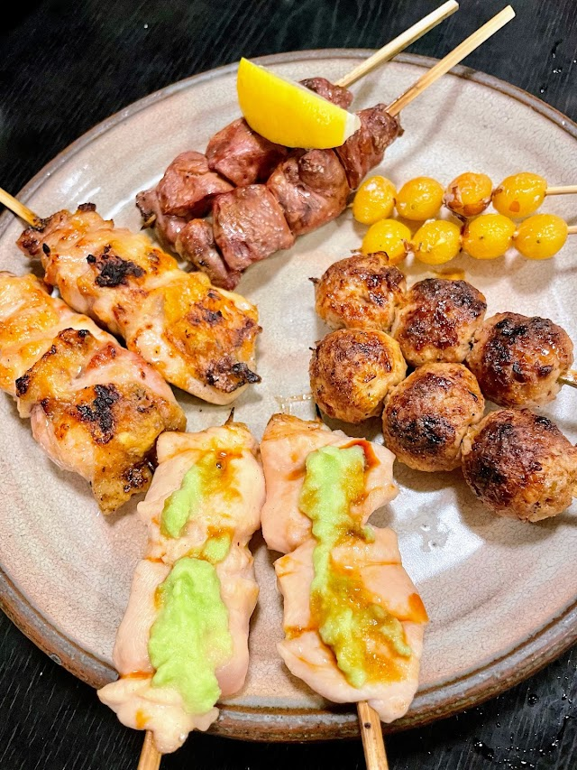
| 営業時間 | 月・火・水・木・金・土 17:30〜23:00 |
|---|---|
| 定休日 | 日曜 |
| 住所 | 群馬県高崎市あら町２２３ メゾンドポエム |
| 予約 | 可 — ☎ 027-327-1977 |
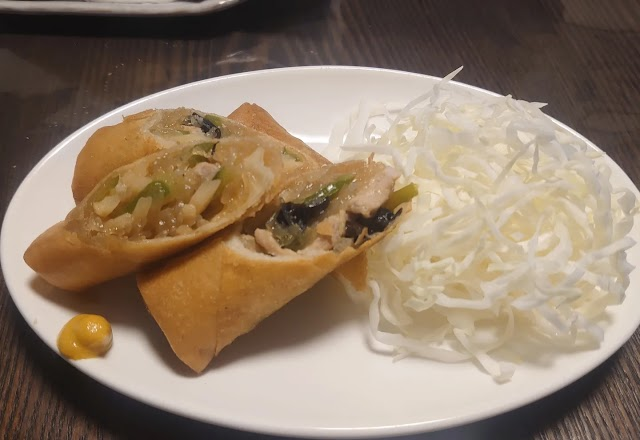
| 営業時間 | 月・火・水・木・金 11:00〜14:00, 18:00〜0:00 ／ 土 11:00〜0:00 |
|---|---|
| 定休日 | 日曜 |
| 住所 | 群馬県高崎市柳川町４０ |
| 予約 | 可 — ☎ 050-1008-9759 ／ 公式サイト |
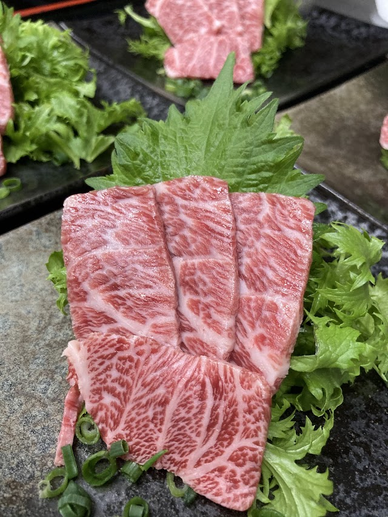
| 営業時間 | 火・水・木・金・土 17:30〜23:00 |
|---|---|
| 定休日 | 月・日曜 |
| 住所 | 群馬県高崎市檜物町１１４ |
| 予約 | 可 — ☎ 027-327-9311 ／ 公式サイト |
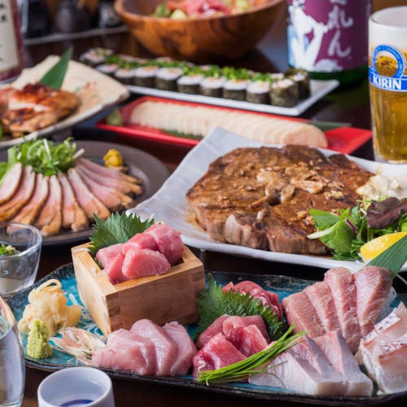
| 営業時間 | 月・火・水・木・土 17:30〜23:30 ／ 金 17:30〜0:30 |
|---|---|
| 定休日 | 日曜 |
| 住所 | 群馬県高崎市砂賀町２２−４ |
| 予約 | 可 — ☎ 050-5304-9955 ／ 公式サイト |
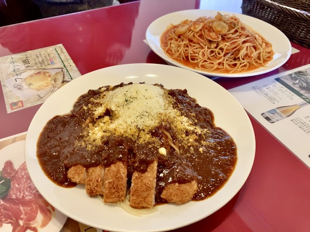
| 営業時間 | 火・水・木・金・土・日 11:00〜21:30 |
|---|---|
| 定休日 | 月曜 |
| 住所 | 群馬県高崎市問屋町１丁目１０−２４ |
| 予約 | 可 — ☎ 027-361-5269 ／ 公式サイト |
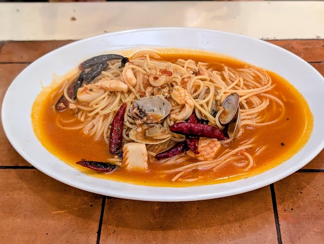
| 営業時間 | 月・火・水・金・土・日 11:00〜21:30 |
|---|---|
| 定休日 | 木曜 |
| 住所 | 群馬県高崎市筑縄町５０−１ |
| 予約 | 可 — ☎ 027-362-7722 ／ 公式サイト |
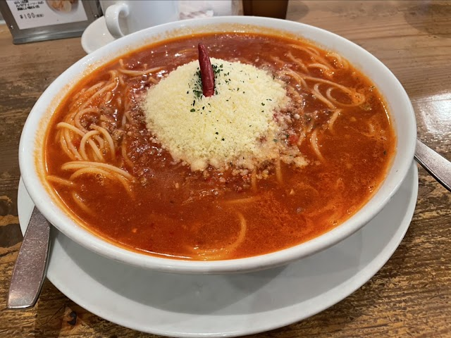
| 営業時間 | 月・火・水・木・金・土・日 11:00〜21:00 |
|---|---|
| 定休日 | なし(要最終確認) |
| 住所 | 群馬県高崎市上中居町１６７９−１ |
| 予約 | 要確認 — ☎ 027-325-2418 ／ 公式サイト |
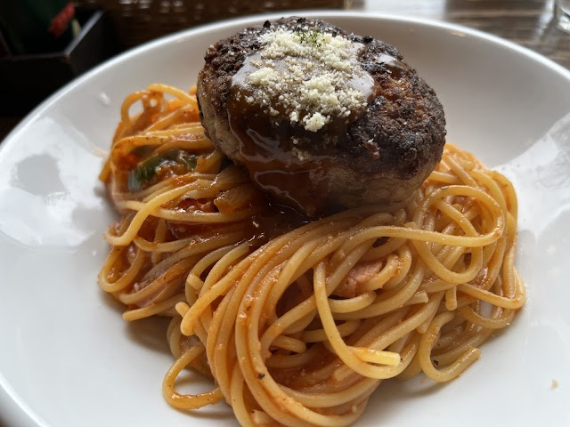
| 営業時間 | 火・水・木・金・土・日 11:00〜14:30, 18:00〜21:00 |
|---|---|
| 定休日 | 月曜 |
| 住所 | 群馬県高崎市貝沢町１２７４ |
| 予約 | 可 — ☎ 027-361-3443 ／ 公式サイト |
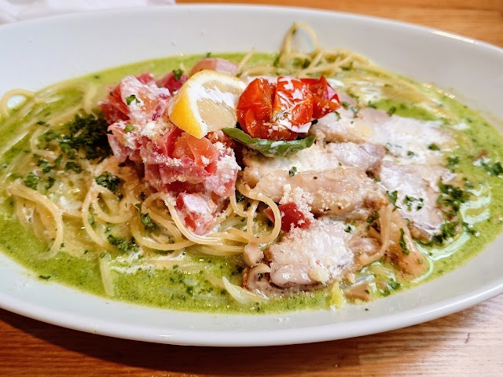
| 営業時間 | 火・水・木・金・土・日 11:00〜15:00, 17:30〜22:00 |
|---|---|
| 定休日 | 月曜 |
| 住所 | 群馬県高崎市中居町３丁目7−１８ |
| 予約 | 可 — ☎ 027-386-5455 ／ 公式サイト |
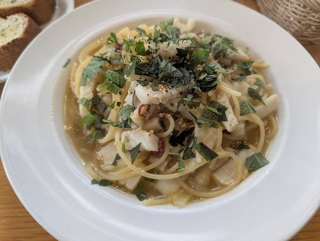
| 営業時間 | 月・火・木・金・土・日 11:00〜15:00, 17:00〜21:00 |
|---|---|
| 定休日 | 水曜 |
| 住所 | 群馬県高崎市中泉町６０９−１ |
| 予約 | 可 — ☎ 027-372-8456 ／ 公式サイト |
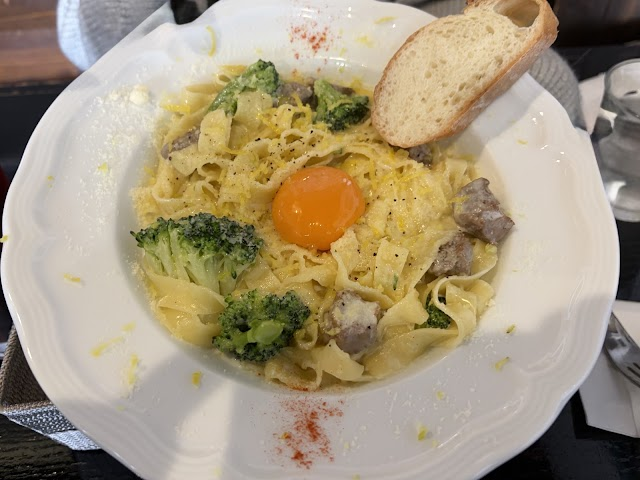
| 営業時間 | 月・火・水・木 11:00〜15:00 ／ 金・土 11:00〜15:00, 18:00〜21:00 ／ 日 18:00〜21:00 |
|---|---|
| 定休日 | なし(要最終確認) |
| 住所 | 群馬県高崎市貝沢町１２７４−１ |
| 予約 | 要確認 — ☎ 027-384-8077 ／ 公式サイト |
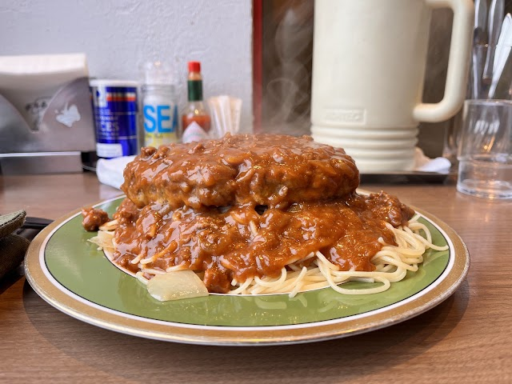
| 営業時間 | 月・火・木・金・土・日 11:30〜14:00 |
|---|---|
| 定休日 | 水曜 |
| 住所 | 群馬県高崎市通町１４１−３ |
| 予約 | 要確認 — ☎ 027-325-2314 |
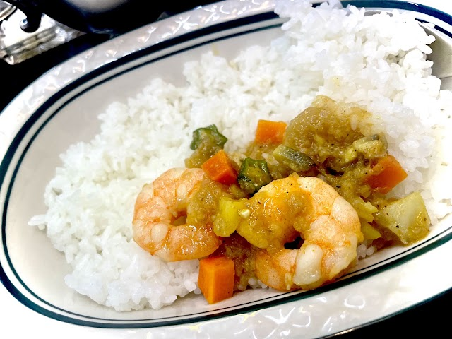
| 営業時間 | 月・木・金・土・日 11:30〜14:00 |
|---|---|
| 定休日 | 火・水曜 |
| 住所 | 群馬県高崎市下小鳥町６７−５ |
| 予約 | 要確認 — ☎ 027-362-8898 ／ 公式サイト |
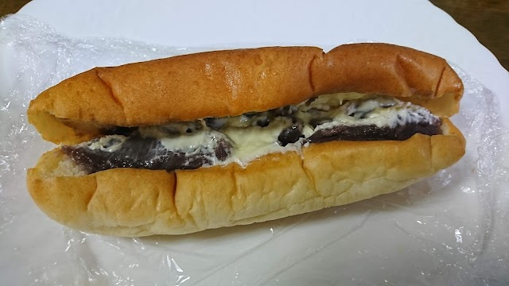
| 営業時間 | 火・水・木・金・土 8:30〜18:00 |
|---|---|
| 定休日 | 月・日曜 |
| 住所 | 群馬県高崎市田町８６−３ |
| 予約 | 要確認 — ☎ 027-327-3060 ／ 公式サイト |
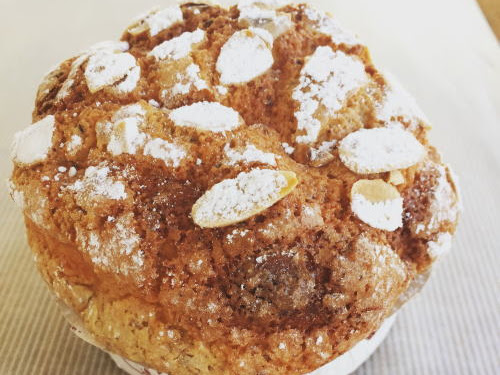
| 営業時間 | 月・火・木・金・土・日 7:00〜18:00 |
|---|---|
| 定休日 | 水曜 |
| 住所 | 群馬県高崎市本町１１７ |
| 予約 | 要確認 — ☎ 027-322-4514 ／ 公式サイト |
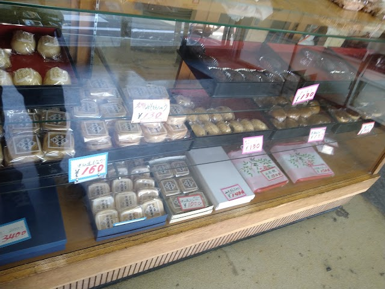
| 営業時間 | 火・水・木・金・土 10:00〜17:00 |
|---|---|
| 定休日 | 月・日曜 |
| 住所 | 群馬県高崎市新町２６６４ |
| 予約 | 要確認 — ☎ 0274-42-0021 ／ 公式サイト |
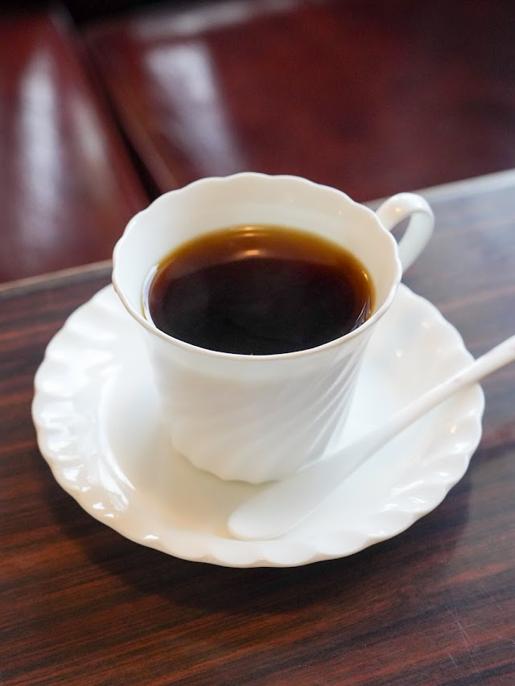
| 営業時間 | 木・金・土・日 10:00〜20:00 |
|---|---|
| 定休日 | 月・火・水曜 |
| 住所 | 群馬県高崎市昭和町２０９ 自家焙煎珈琲きゃらばん |
| 予約 | 要確認 — ☎ 027-323-4670 ／ 公式サイト |
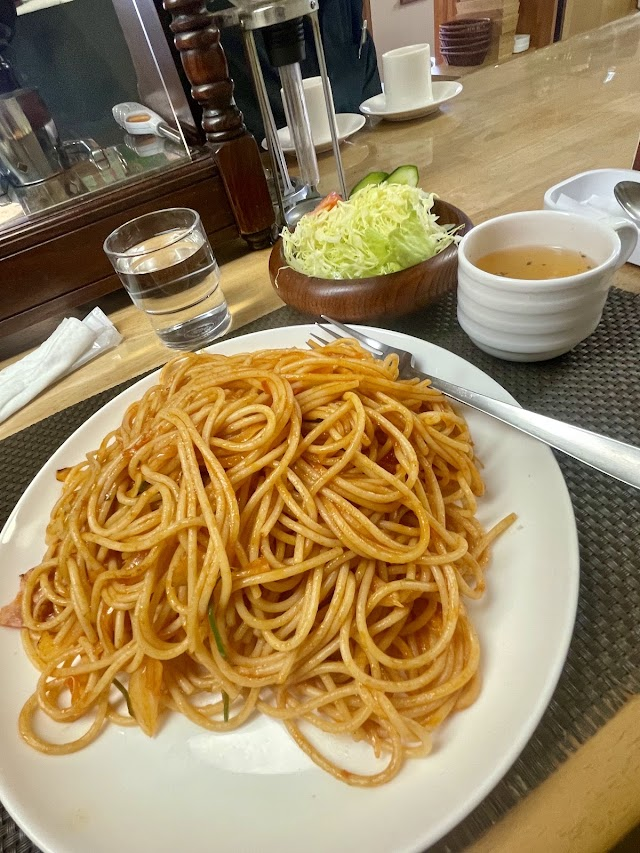
| 営業時間 | 月・火・水・木・金・土・日 10:00〜20:00 |
|---|---|
| 定休日 | なし(要最終確認) |
| 住所 | 群馬県高崎市飯塚町４７２−１０ |
| 予約 | 要確認 — ☎ 027-363-1698 |
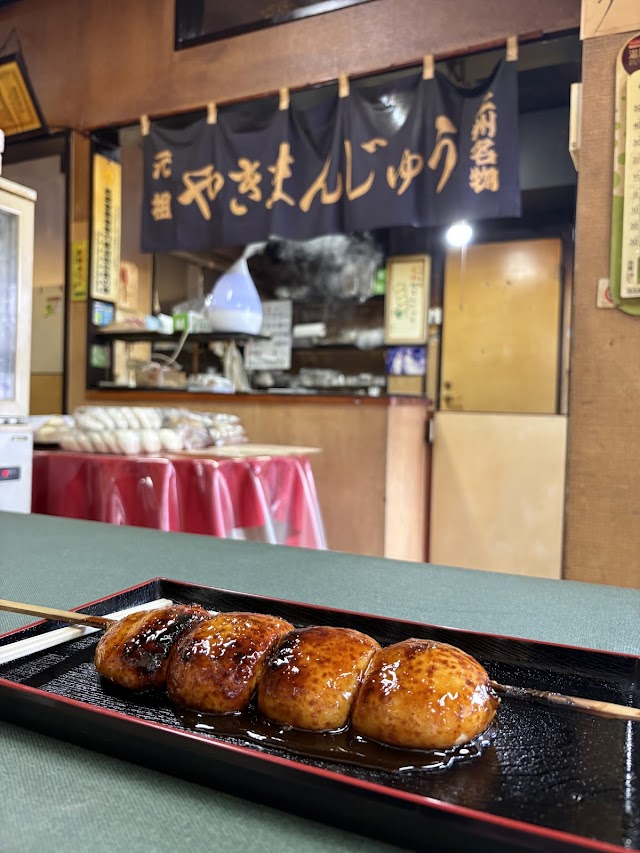
| 営業時間 | 水・木・金・土・日 10:30〜16:00 |
|---|---|
| 定休日 | 月・火曜 |
| 住所 | 群馬県高崎市鶴見町５−１ 天田ビル |
| 予約 | 要確認 — ☎ 027-322-2070 |
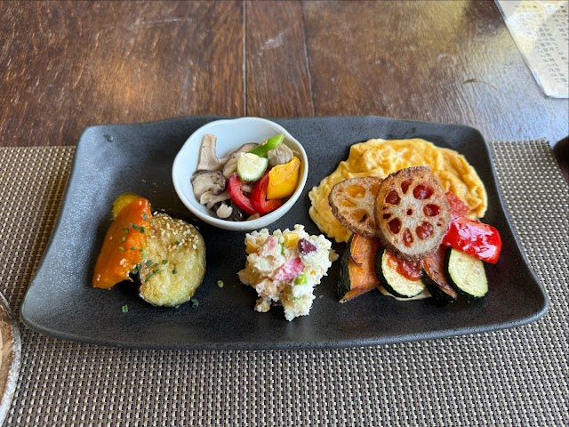
| 営業時間 | 火・水・土・日 10:30〜16:30 |
|---|---|
| 定休日 | 月・木・金曜 |
| 住所 | 群馬県高崎市石原町2710ｰ1 |
| 予約 | 可 — ☎ 090-2475-4893 ／ 公式サイト |
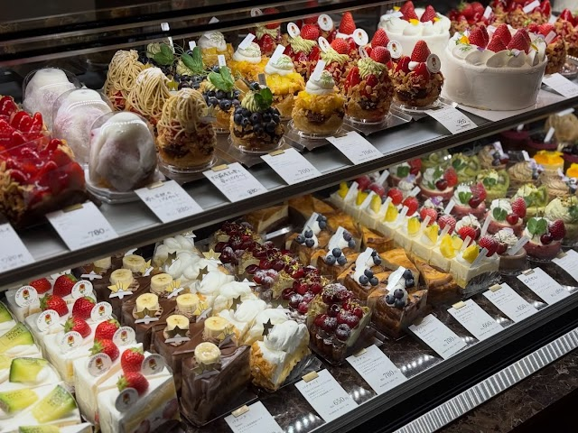
| 営業時間 | 月・火・金・土・日 12:00〜18:00 |
|---|---|
| 定休日 | 水・木曜 |
| 住所 | 群馬県高崎市新保町２９ |
| 予約 | 要確認 — ☎ 027-363-7830 ／ 公式サイト |
本ガイドは個人利用目的で作成。掲載情報は2026年8月時点の調査に基づく。写真出典: Google Maps投稿写真(©各投稿者/Google)。